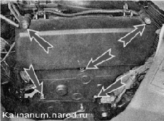
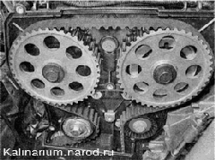

Ремень ГРМ - проверка состоянияРемень привода газораспределительного механизма следует проверять при проведении ТО автомобиля — через каждые 15 000 км пробега. Если при работе двигателя, в зоне верхней передней крышки ремня привода ГРМ прослушивается сильный шум вращающегося подшипника при проверке ремня следует проверить также состояние натяжного и направляющего роликов и насоса охлаждающей жидкости . Последовательность выполнения 1. Подготавливаем автомобиль к выполнению работы. 2. Снимаем декоративную накладку двигателя. 3. Отсоединяем от электронасосов стеклоомывателей наконечники проводов, снимаем бачок стеклоомывателей и, не отсоединяя от него трубки, отводим в сторону. 4. Шестигранным ключом на 5 мм отворачиваем пять болтов крепления передней верхней крышки ремня привода ГРМ. 
5. Снимаем крышку с двигателя. 6. Вращая коленчатый вал, визуально проверяем состояние ремня. 
Рекомендация Коленчатый вал можно вращать накидным ключом на 17 мм за болт крепления его шкива . Ремень должен быть чистый — без грязи и масла на его поверхности. Ремень с надрывами, трещинами, расслоениями, срезанными или изношенными зубьями, потертостями до корда необходимо заменить. 7. После осмотра устанавливаем крышку и снятые с автомобиля детали на место. |